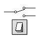
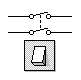

Son componentes esenciales en la activación o desactivación de los circuitos electrónicos. Tenemos los siguientes tipos:
|
UPUD (SPST) |
UPDD (SPDT) |
DPUD (DPST) |
DPDD (DPDT) |
") |
 |  | |
|
Un Polo, Una Dirección |
Un Polo, Dos Direcciones |
Dos Polos, Una Dirección |
Dos Polos, Dos Direcciones |
|
(Single Pole, Single Throw) |
(Single Pole, Double Throw) |
(Double Pole, Single Throw) |
(Double Pole, Double Throw) |
- Se llama polo al punto por donde entra la corriente al interruptor.
- Se llama contacto al punto por el que sale la corriente.
- Dirección es el posible camino por el que puede pasar corriente una vez accionado el interruptor. Cuando al accionarlo, todos los caminos quedan conectados, se dice que tiene una dirección. Si hay un camino por el que pasa la corriente, y otro queda desconectado, tiene dos direcciones.
A los interruptores de dos direcciones se les suele llamar habitualmente conmutadores.
Un pulsador es un componente que deja pasar la corriente o la interrumpe sólo cuando se actúa sobre él. Según esto, se llaman del siguiente modo:
|
TIPOS DE PULSADORES |
|
|
Pulsador N.A. |
Pulsador N.C. |
- Normalmente abierto (N.A.), que no deja pasar la corriente hasta que no se actúa sobre él.
- Normalmente cerrado (N.C.), que sí deja pasar la corriente y abre el circuito al actuar sobre él.